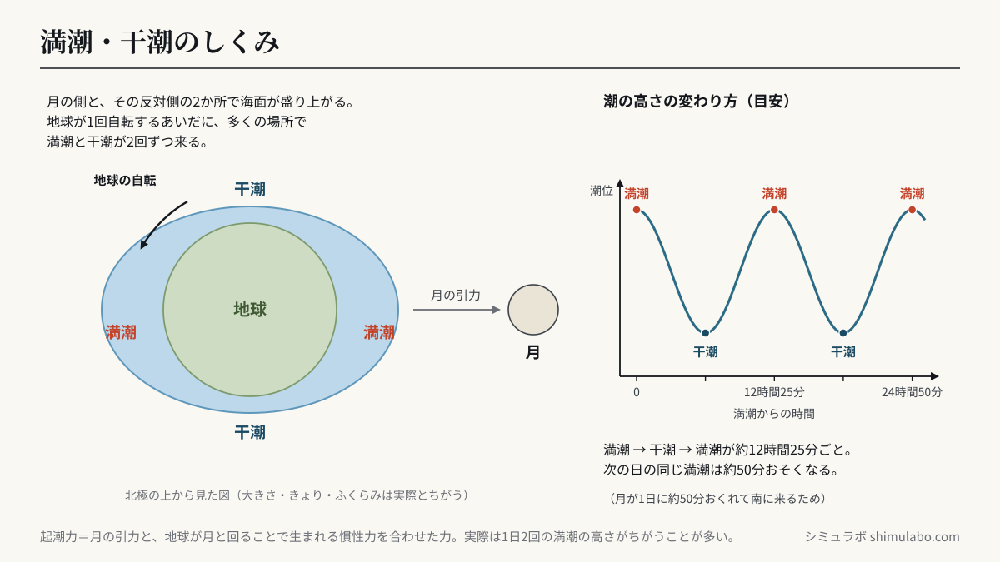
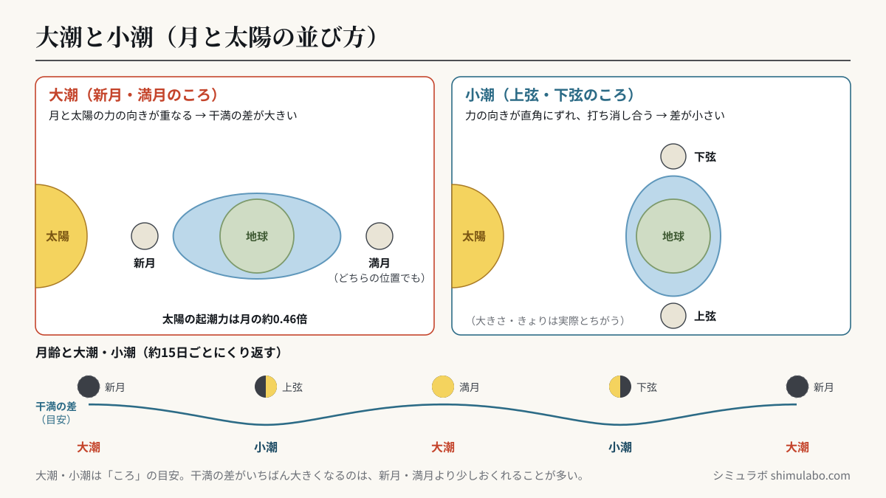

この潮時表について
このツールは海洋予報オープンデータAPI（Open-Meteo Marine）の潮位（海面高）予測から、今日の極大・極小＝満潮・干潮の時刻を割り出しています。潮が動く時間帯（満潮・干潮の前後）は魚の活性が上がり、干潮前後は潮干狩り・磯遊びの時間です。






図はタップすると大きく表示されます。資料やSNSに使うときは、出典「シミュラボ」とページのURLを添えてください。
数値モデルの推定のため、公式の潮汐表と時刻が前後することがあります。航海・業務用途は海上保安庁の潮汐表を必ず使用してください。
引用・転載について
本ページの計算結果・数値は、出典を明記いただければブログ・ニュース記事・SNS・社内資料への引用を歓迎します。事前連絡は不要です。
推奨クレジット表記：
Webでご利用の際は上記URLへのリンク設置をお願いします。
出典：シミュラボ「今日の潮、いつ満ちる？」 https://shimulabo.com/sims/shio-live/Webでご利用の際は上記URLへのリンク設置をお願いします。
よくある質問
- データの出典は？
- 海洋予報オープンデータAPI（Open-Meteo Marine）の潮位（海面高）予測値から満潮・干潮を算出しています。
- 公式の潮汐表と違う
- モデル推定のため多少ずれます。レジャーの目安にはなりますが、航海用途は海上保安庁の潮汐表を使用してください。
- 入力データは送信される？
- エリアの選択のみを使います。個人情報は一切送信されません。